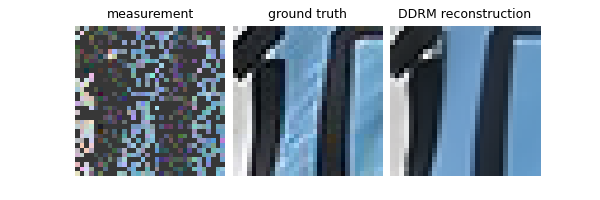
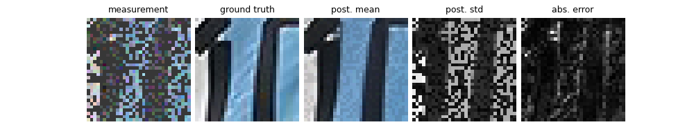

Note
Go to the end to download the full example code.
Image reconstruction with a diffusion model#
This code shows you how to use the DDRM diffusion algorithm to reconstruct images and also compute the uncertainty of a reconstruction from incomplete and noisy measurements.
The paper can be found at https://arxiv.org/pdf/2209.11888.pdf.
The DDRM method requires that:
The operator has a singular value decomposition (i.e., the operator is a
deepinv.physics.DecomposablePhysics).The noise is Gaussian with known standard deviation (i.e., the noise model is
deepinv.physics.GaussianNoise).
import deepinv as dinv
from deepinv.utils.plotting import plot
import torch
import numpy as np
from deepinv.utils.demo import load_url_image
Load example image from the internet#
This example uses an image of Lionel Messi from Wikipedia.
device = dinv.utils.get_freer_gpu() if torch.cuda.is_available() else "cpu"
url = (
"https://upload.wikimedia.org/wikipedia/commons/b/b4/"
"Lionel-Messi-Argentina-2022-FIFA-World-Cup_%28cropped%29.jpg"
)
x = load_url_image(url=url, img_size=32).to(device)
Define forward operator and noise model#
We use image inpainting as the forward operator and Gaussian noise as the noise model.
sigma = 0.1 # noise level
physics = dinv.physics.Inpainting(
mask=0.5,
img_size=x.shape[1:],
device=device,
noise_model=dinv.physics.GaussianNoise(sigma=sigma),
)
Define the MMSE denoiser#
The diffusion method requires an MMSE denoiser that can be evaluated a various noise levels. Here we use a pretrained DRUNET denoiser from the denoisers module.
denoiser = dinv.models.DRUNet(pretrained="download").to(device)
Create the Monte Carlo sampler#
We can now reconstruct a noisy measurement using the diffusion method.
We use the DDRM method from deepinv.sampling.DDRM, which works with inverse problems that
have a closed form singular value decomposition of the forward operator.
The diffusion method requires a schedule of noise levels sigmas that are used to evaluate the denoiser.
sigmas = np.linspace(1, 0, 100) if torch.cuda.is_available() else np.linspace(1, 0, 10)
diff = dinv.sampling.DDRM(denoiser=denoiser, etab=1.0, sigmas=sigmas, verbose=True)
Generate the measurement#
We apply the forward model to generate the noisy measurement.
Run the diffusion algorithm and plot results#
The diffusion algorithm returns a sample from the posterior distribution. We compare the posterior mean with a simple linear reconstruction.
xhat = diff(y, physics)
# compute linear inverse
x_lin = physics.A_adjoint(y)
# compute PSNR
print(f"Linear reconstruction PSNR: {dinv.metric.PSNR()(x, x_lin).item():.2f} dB")
print(f"Diffusion PSNR: {dinv.metric.PSNR()(x, xhat).item():.2f} dB")
# plot results
error = (xhat - x).abs().sum(dim=1).unsqueeze(1) # per pixel average abs. error
imgs = [x_lin, x, xhat]
plot(imgs, titles=["measurement", "ground truth", "DDRM reconstruction"])

0%| | 0/9 [00:00<?, ?it/s]
33%|███▎ | 3/9 [00:00<00:00, 26.22it/s]
67%|██████▋ | 6/9 [00:00<00:00, 26.31it/s]
100%|██████████| 9/9 [00:00<00:00, 26.37it/s]
100%|██████████| 9/9 [00:00<00:00, 26.33it/s]
Linear reconstruction PSNR: 8.79 dB
Diffusion PSNR: 22.76 dB
Create a Monte Carlo sampler#
Running the diffusion gives a single sample of the posterior distribution.
In order to compute the posterior mean and variance, we can use multiple samples.
This can be done using the deepinv.sampling.DiffusionSampler class, which converts
the diffusion algorithm into a fully fledged Monte Carlo sampler.
We set the maximum number of iterations to 10, which means that the sampler will run the diffusion 10 times.
f = dinv.sampling.DiffusionSampler(diff, max_iter=10)
Run sampling algorithm and plot results#
The sampling algorithm returns the posterior mean and variance. We compare the posterior mean with a simple linear reconstruction.
mean, var = f(y, physics)
# compute PSNR
print(f"Linear reconstruction PSNR: {dinv.metric.PSNR()(x, x_lin).item():.2f} dB")
print(f"Posterior mean PSNR: {dinv.metric.PSNR()(x, mean).item():.2f} dB")
# plot results
error = (mean - x).abs().sum(dim=1).unsqueeze(1) # per pixel average abs. error
std = var.sum(dim=1).unsqueeze(1).sqrt() # per pixel average standard dev.
imgs = [
x_lin,
x,
mean,
std / std.flatten().max(),
error / error.flatten().max(),
]
plot(
imgs,
titles=[
"measurement",
"ground truth",
"post. mean",
"post. std",
"abs. error",
],
)

0%| | 0/10 [00:00<?, ?it/s]
10%|█ | 1/10 [00:00<00:03, 2.55it/s]
20%|██ | 2/10 [00:00<00:03, 2.60it/s]
30%|███ | 3/10 [00:01<00:02, 2.62it/s]
40%|████ | 4/10 [00:01<00:02, 2.60it/s]
50%|█████ | 5/10 [00:01<00:01, 2.60it/s]
60%|██████ | 6/10 [00:02<00:01, 2.61it/s]
70%|███████ | 7/10 [00:02<00:01, 2.59it/s]
80%|████████ | 8/10 [00:03<00:00, 2.61it/s]
90%|█████████ | 9/10 [00:03<00:00, 2.59it/s]
100%|██████████| 10/10 [00:03<00:00, 2.60it/s]
100%|██████████| 10/10 [00:03<00:00, 2.60it/s]
Monte Carlo sampling finished! elapsed time=3.85 seconds
Iteration 9, current converge crit. = 9.45E-03, objective = 1.00E-01
Linear reconstruction PSNR: 8.79 dB
Posterior mean PSNR: 22.12 dB
Total running time of the script: (0 minutes 4.560 seconds)